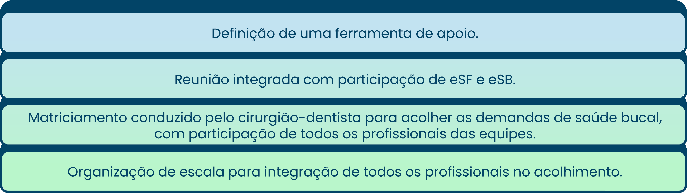

TÓPICO 02
O TRABALHO COLABORATIVO E INTERPROFISSIONAL NA APS
TÓPICO 02
O TRABALHO COLABORATIVO E INTERPROFISSIONAL NA APS
Para que a incorporação da lógica de acolhimento integrado seja implementada em uma UBS de forma efetiva, sugere-se que sejam colocadas em prática as seguintes atividades:
